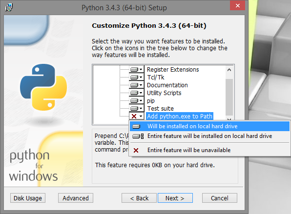
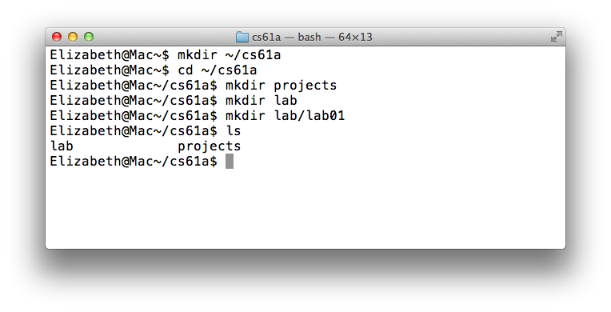

Lab 1: Setting up a productive workflow
Due at 11:59pm on 06/23/2015.
Starter Files
Download lab01.zip. Inside the archive, you will find starter files for the questions in this lab, along with a copy of the OK autograder.
Submission
By the end of this lab, you should have submitted the lab with
python3 ok --submit. You may submit more than once before the
deadline; only the final submission will be graded.
Introduction
This lab explains how to use your own computer to complete assignments for CS 61A. If you are using a school computer, most of the instructions are the same, except you won't have to install anything.
You should have received a class account form at the beginning of lab (with a username of the form
cs61a-xx. These accounts allow you to use instructional machines in the CS department and are useful if you do not have regular access to a computer. They are not required for CS 61A. See the section Using your class account for details.
Setting up
Installing a terminal
The terminal is a program that allows you to interact with your computer by entering commands. No matter what operating system you use (Windows, MacOS, Linux), the terminal will be an essential tool for CS 61A.
If you're on a Mac or are using a form of Linux (such as Ubuntu), you already have a program called
Terminalon your computer. Open that up and you should be good to go.
For Windows users, we recommend downloading a terminal called GitBash.
Installing Python 3
Python 3 is our primary programming language. You can get Python here. Download one of the installers (for example, "Windows x86-64 MSI installer" or "Mac OS X 64-bit installer"). If your computer is a 64-bit machine, you should download the 64-bit installer. (In general, if your computer is new within the past 2 years, it is likely 64-bit. Ask a TA or lab assistant if you're not sure.)
MacOS users can refer to this video for additional help on setting up Python.
If you're having trouble opening the installer, you can right-click the icon and select "Open".
For Windows users, if you're installing a more recent version of Python, you should make sure to specify during setup to 'Add python.exe to Path', which will allow you to execute thepythoncommand from your terminal.
You can also refer to this video for additional help on setting up Python (up to 1:09 into the video).
If you did not see the aforementioned option during setup, then you will need to manually configure your
PATHenvironment variable; the same video describes how to do this from 5:00 to 5:54.
Installing a text editor
The Python interpreter that you installed earlier allows you to run Python code. You will also need a text editor, which will help you write Python code.
A text editor is similar to Microsoft Word — a program that allows you to write in one or more languages. You will be using a text editor to create, modify, and save files.
There are many editors out there, each with its own set of features. We find that Sublime Text 2 is a popular choice among students, but you are free to use other text editors.
Note: Please, please, please do not use Microsoft Word to edit programs. Word is designed to edit natural languages like English — trouble will ensue if you try to write Python with Word!
For your reference, we've also written some guides on using popular text editors. After you're done with lab, you can take a look if you're interested:
Open a terminal
First, open a terminal, if you haven't already.
Right now, I'm in my home directory. The home directory is represented
by the ~ symbol. When you first open your terminal, you will start in
the home directory.
Don't worry if your terminal window doesn't look exactly the same; the important part is that the text on the left hand side is relatively the same (with a different name) and you should definitely see a
~(tilde).
Organize your files
In this section, we will be learning terminal commands to manage our files.
Directories
The first command we'll use is ls. Try typing it in the terminal:
lsThe ls command lists all the files and folders in the current
directory. A directory is another name for a folder (such as the
Documents folder). Since we're in the home directory right now, you
should see the contents of your home directory.
Making new directories
Our next command is called mkdir, which makes new
directories. Let's make a directory called cs61a to store all of
the assignments for this class:
mkdir cs61aA folder called cs61a will appear in our home directory.
Changing directories
To move into another directory, we use the cd command. Try typing the
following command into your terminal:
cd cs61aThe cd command will change directories — in other words, it
moves you into the specified folder. In the example above, we chose to
move into the cs61a directory.
If we want to go back to our home directory, there are a few ways to do so:
- Type
cd ..(two dots). The..means "the parent directory". In this case, the parent directory ofcs61ahappens to be our home directory, so we can usecd ..to go up one directory. - Type
cd ~(the tilde). Remember that~means home directory, so this command tells your terminal to change to the home directory, no matter where you currently are. - Type
cd(that is, thecdcommand with no arguments). In UNIX, typing justcdis a shortcut for typingcd ~.
At this point, let's create some more directories. Make sure you are in
the ~/cs61a directory, using the necessary cd commands. Then create
projects and labfolders inside of our cs61a folder:
cd ~/cs61a
mkdir projects
mkdir labNow if we list the contents of the directory (using ls), we'll see two
folders, projects and lab.

Downloading the assignment
Next download the zip archive, lab01.zip, which contains all the
files that we'll need for this lab. Once you've done that, let's find our
downloaded file. On most computers, lab01.zip is probably located in a
directory called Downloads in your home directory. Let's use the ls command
to check:
ls ~/DownloadsIf you don't see lab01.zip, ask a TA or lab assistant for help.
Extracting starter files
We'll then need to extract the files in the zip archive before we can start working. Different operating systems and different browsers have different ways of unzipping. If you don't know how, you can search onine
If you have a Mac or Linux and you want to unzip from the command line (hooray!), you can use the
unzipcommand:unzip lab01.zipMake sure you are in the
Downloadsdirectory in your terminal.
Once you unzip lab01.zip, you should have a new folder in called lab01 which
contains the following files:
lab01.py: The template file you'll be adding your code toook: A program used to test and submit assignmentslab01.ok: A configuration file forok
Moving files
Let's move our starter files into our new lab directory. From the terminal use the following command:
mv ~/Downloads/lab01 ~/cs61a/labThe mv command will move the ~/Downloads/lab01 folder
into the ~/cs61a/lab folder.
Now, go to the lab01 folder that we just moved. Try using cd to navigate
your own way! If you get stuck, you can use the following command:
cd ~/cs61a/lab/lab01We're ready to start editing a file. Don't worry if this seems complicated — it will get much easier over time. Just keep practicing! You can also take a look at our UNIX tutorial for a more detailed explanation of terminal commands.
Understand the question
Open up lab01.py in your text editor. You should see something like this:
def twenty_fifteen():
"""Come up with the most creative expression that evaluates to 2015,
using only numbers and the +, *, and - operators.
>>> twenty_fifteen()
2015
"""
return ______
return ((13 * 31 + 100) * 4) + 3The lines in the triple-quotes """ are called a docstring, which is a
description of what the function is supposed to do. When writing code in 61A,
you should always read the docstring!
The lines that begin with >>> called doctests. Doctests explain what the
function does by showing actual Python code: "if we input this Python code (the
lines that say >>>), what should the expected output be (the lines underneath
the >>>)?"
In twenty_fifteen,
- The docstring tells us to "come up with the most creative expression that
evaluates to 2015," but that we can only use numbers and arithmetic operators
+(add),*(multiply), and-(subtract). - The doctest for
twenty_fifteen()checks that no matter how we do our calculation,twenty_fifteenshould return the number 2015.
You should never change the doctests in your assignments! The only part of your assignments that you'll need to edit is the code.
Write code
Once you understand what the question is asking, you're ready to start writing
code! You should fill in the blank (return ______) with an expression that
evaluates to 2015. What's the most creative expression you can come up with?
Run tests
In 61A, we will use a program called ok to test our our code. ok will be
included in every assignment in this class.
Back to the terminal! Make sure you are in the lab01 directory we created
earlier (remember, the cd command lets you change
directories).
In that directory, you can type ls to verify that there are the following
three files:
lab01.py: the starter file you just editedok: our testing programlab01.ok: a configuration file for OK
Now, let's test our code to make sure it works. You can run ok with this
command:
python3 okIf you are using Windows and the
python3command doesn't work, try using justpythonorpy. If neither of those work, take another look at the video in the section on installing Python to make sure you are setting up your PATH correctly. Ask a TA or lab assistant for help if you get stuck!
Note: The first time you run OK, you will be prompted for your bCourses email. We use this information to associate your code with you when grading.
Every time you run OK, OK will try to back up your work. Don't worry if it says that the "Connection timed out." We won't use your backups for grading.
If you wrote your code correctly, we should see a successful test:
=====================================================================
Assignment: Lab 1
OK, version v1.3.31
=====================================================================
~~~~~~~~~~~~~~~~~~~~~~~~~~~~~~~~~~~~~~~~~~~~~~~~~~~~~~~~~~~~~~~~~~~~~
Running tests
---------------------------------------------------------------------
Test summary
Passed: 1
Failed: 0
[ooooooooook] 100.0% passedIf you didn't pass the tests, ok will instead show you something like this:
---------------------------------------------------------------------
Doctests for twenty_fifteen
>>> from lab01 import *
>>> twenty_fifteen()
2013
# Error: expected
# 2015
# but got
# ...
---------------------------------------------------------------------
Test summary
Passed: 0
Failed: 1
[k..........] 0.0% passedFix your code in your text editor until the test passes.
Submitting assignments
Now that you have completed your first CS 61A assignment, it's time to turn it in.
Please fill out this survey about your OK email! We will be using this information to associate your work with your grades on bCourses.
Step 1: Submit with ok
From your terminal, make sure you are in the directory that contains ok. If
you aren't there yet, you can use this command:
cd ~/cs61a/lab/lab01Next, use ok with the --submit option:
python3 ok --submitThis will prompt you for your bCourses email, if you haven't run OK before. After that, OK will print out a message like the following:
Submitting... 100% complete
Backup successful for user: ...
URL: https://ok-server.appspot.com/#/...You can follow the URL to view your submission.
Step 2: Verifying your submission
You can follow the link that OK provides to see your final submission, or you can go to okpy.org. You will be able to view your submission after you log in.
Make sure you login with the same email you provided when running
okfrom your terminal!
You should see a successful submission of about 1 minute ago.
If you haven't filled out the survey about your OK email, please do so!
Congratulations, you just submitted your first CS61A assignment!
Appendix: Using your class account
Logging into your class account
From your laptop
At the start of your first lab section, you should have received a class account form. At the top left of the form should be your username and your temporary password:
Login: cs61a-aaa
Password: ...Most of the work in this class can be done without logging into your account. However, there may be times when you'll find working from an instructional account to be easier.
Let's login in now. Open up your terminal and type in the following command:
ssh cs61a-??@cory.eecs.berkeley.eduwhere ?? is replaced with your two letter login.
If you're interested, here's an explanation of what the command does:
sshis a secure shell (i.e. terminal) that connects to remote servers.cs61a-??is the username on the remote server.cory.eecs.berkeley.eduis the name of the remote server. Again, here is a list of servers that belong to Berkeley's CS department.
You can also watch this video for help.
The first time you attempt to ssh to a new server, the following message will
appear:
The authenticity of host 'cory.eecs.berkeley.edu' can't be established.
RSA key fingerprint is ...
Are you sure you want to continue connecting (yes/no)?Once you confirm, you will be prompted for your password. If you haven't changed your password yet, use the temporary password printed on your class account form.
When you type your password, nothing will show up! This is a security feature, not a bug. Continue typing and press enter to login.
From an instructional machine
Most of our instructional computers use Ubuntu, a version of the Linux operating system. To login, just find lab computer and enter your username and password.
Once you login, you'll want to open a terminal. On Ubuntu, you can open a
terminal with Ctrl-Alt-T.
Registering your account
The first time you login to your class account, your terminal will ask you some registration questions about the following:
- Last name
- First name
- Student ID
- Email (please use your berkeley.edu email!)
- Code name (we don't use this information, you can enter anything you want)
If your terminal doesn't prompt you for this information the first time you login, you can type
registerto begin the process. You don't need to do this again if you've already registered before.
If you find errors (e.g. you typed your last name as "ssh update"), fix them immediately by running the command:
re-registerChanging your password
The temporary password is not the easiest thing to remember. While still logged in, you should change your password by typing in:
ssh updateYou will be prompted for the temporary password again. After that, following the instructions for changing your password.
Logging out
Once you've registered your account and changed your password, you can
log out by pressing Ctrl-D, or with the command exit.